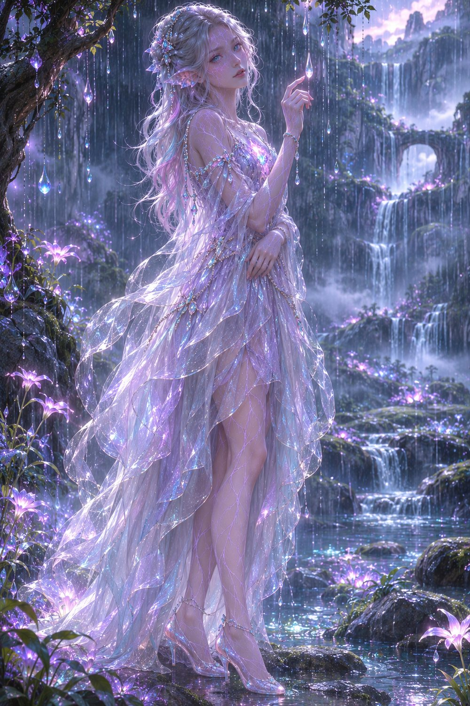
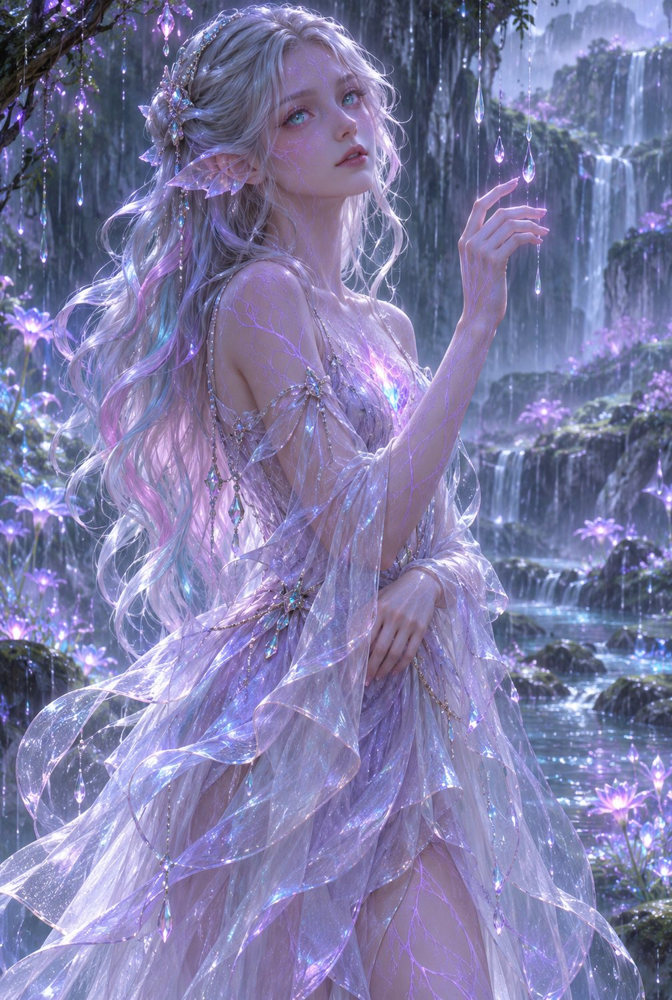
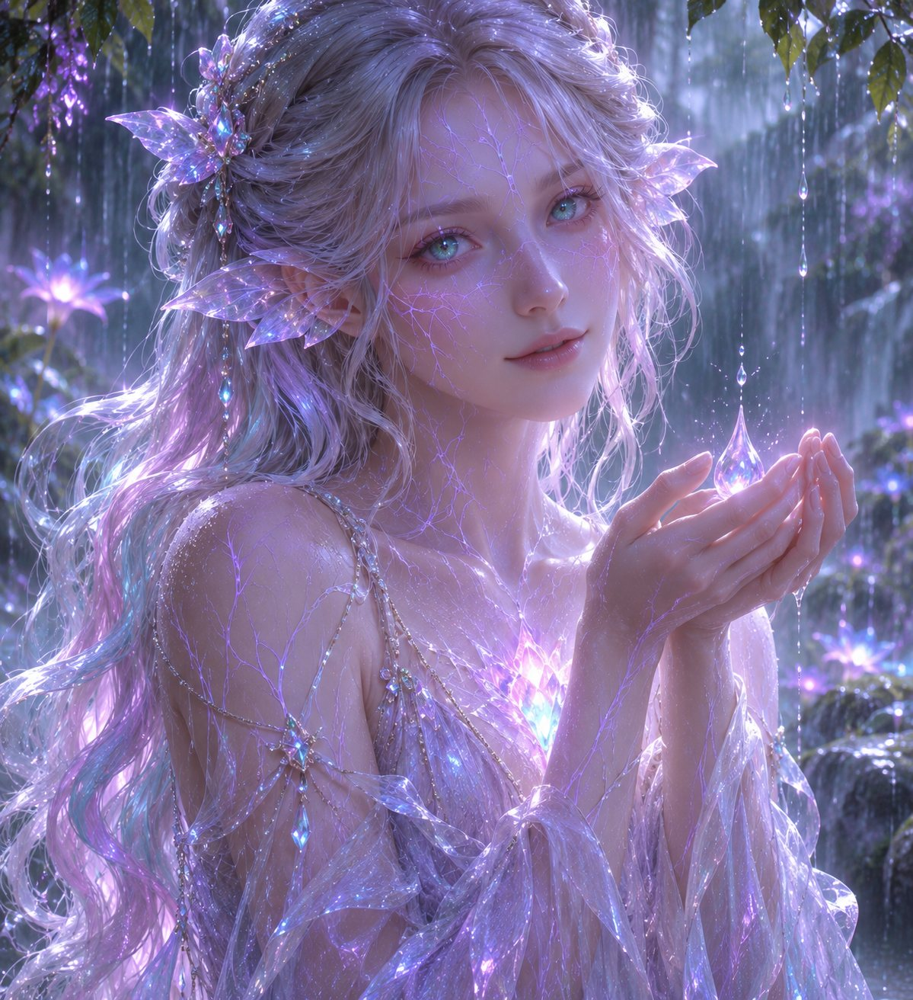
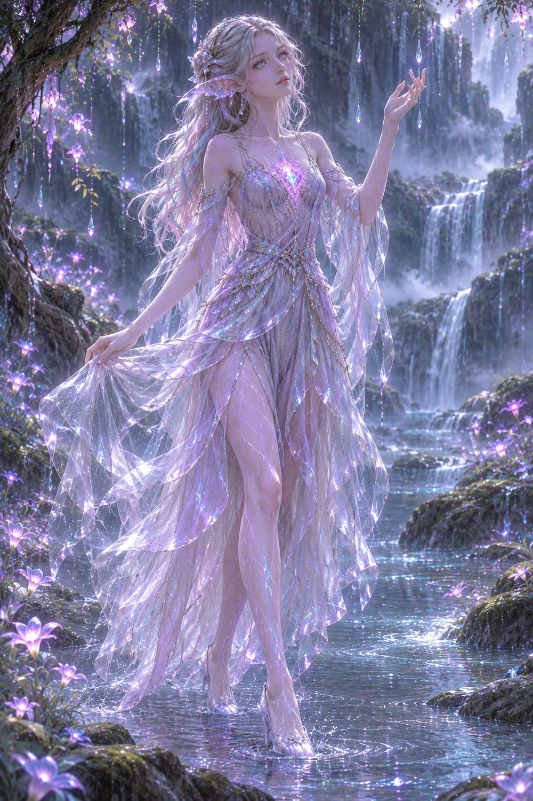
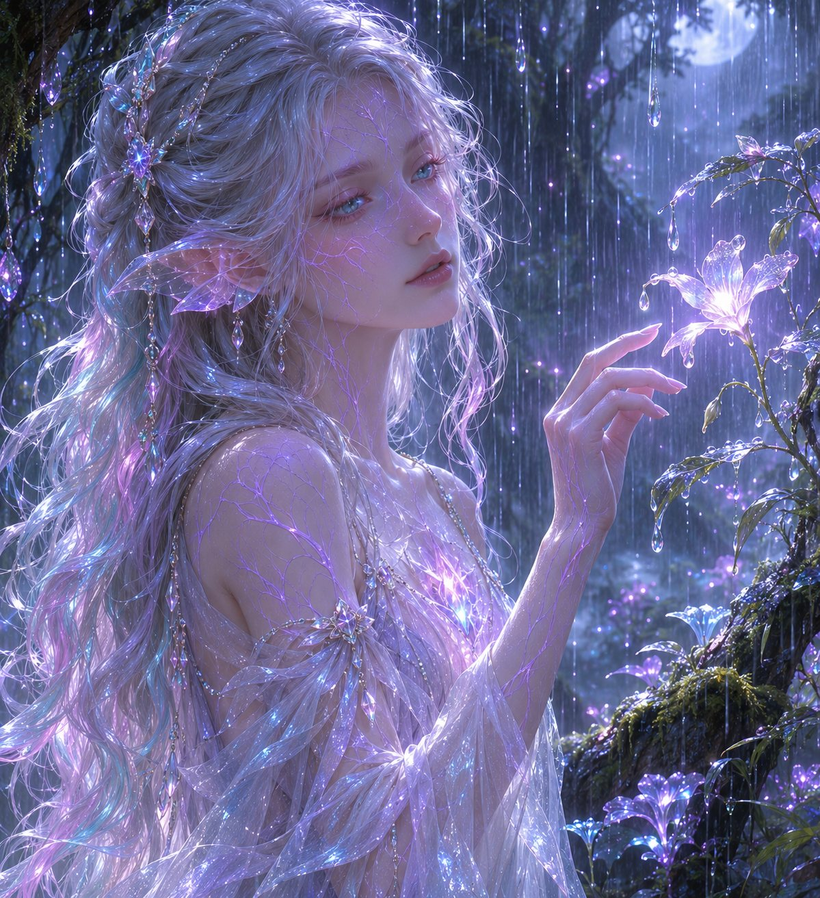

Мир Эйр'Таллар
Мир, где реальность соприкасается с эфиром
О мире
Эйр'Таллар — огромный мир, существующий на границе привычной материи и таинственного эфира. Здесь есть горы, океаны, леса, пустыни, города и живые существа. Но природа этого мира отличается от той, к которой привыкли люди.
Это не мир бесконечного волшебства. Эфир здесь является частью природы, но пользоваться им могут далеко не все.

Происхождение мира

Согласно древним преданиям, Эйр'Таллар существовал задолго до появления известных ныне народов. В начале была только материя — безжизненная, холодная и неподвижная. За пределами привычного пространства существовал эфир, не подчинявшийся обычным законам физики.
Затем произошёл Первый Разлом — граница между материей и эфиром нарушилась. Энергия проникла в физический мир, изменив его навсегда.
Появились первые эфирные источники, необычные формы жизни, места пространственных аномалий и существа, в чьих телах эфир стал частью биологии. Среди них были первые ильвэйрисы.
География Эйр'Таллара
Шесть крупных областей известного мира. Пролистывай галерею по горизонтали.



Народы и существа

Ильвэйрисы
Древний редкий народ, связанный с эфиром. Их тела имеют эфирную сеть и светящиеся ядра.
Люди
Самый многочисленный народ. Строят города, исследуют руины и изучают эфир. Среди них есть как союзники, так и охотники.
Саариты
Гуманоиды с природными кристаллическими структурами в теле, способные накапливать эфир в минерализованных тканях.
Вейраны
Редкие разумные обитатели древних лесов, чьи тела сочетают органические и растительные структуры.
Эфир и магия
Эфир — особый вид энергии, взаимодействующий с материей, жизнью и пространством. Он не исполняет любое желание: любое воздействие требует источника энергии, подготовки и имеет последствия.
Эфирное воздействиеВосстановлениеПамятьПространствоЖизненная связь
Некоторые народы используют инструменты и кристаллы, другие обладают врождёнными особенностями. Эфир нельзя использовать бесконечно.
История и эпохи
Люди и их цивилизация
Люди живут в королевствах, независимых городах и торговых союзах. Технологии напоминают развитую средневековую эпоху, но в отдельных местах встречаются механизмы, работающие на эфирных кристаллах.
Королевства контролируют земли и торговые пути. Орден Познания объединяет исследователей и магов. Собиратели — охотники и торговцы редкостями, среди которых есть те, кто ищет эфирных существ.
Не все люди враги ильвэйрисов. Многие даже не верят, что этот народ существует.
Ильвэйрисы в современном мире
Сейчас осталось лишь несколько сотен ильвэйрисов. Они живут небольшими общинами и отдельными семьями, часто не зная о существовании друг друга.
Их древний центральный город — Эллиар'Вейн, Город Тихого Света — хранит летописи, сведения о Первом Разломе, эфирных ядрах и потерянных поселениях.
После древних похищений и экспериментов многие ильвэйрисы избегают контактов с людьми.
Место Овриэйны в этом мире
Овриэйна живёт в одной из скрытых долин Эйрены. Её мир — небольшой дом, ручей, древние деревья, дождь и животные, иногда приходящие к порогу.
Она рисует, читает старые книги, ведёт записи и изучает растения. Её редкая способность связана с дождём: она может осторожно менять движение отдельных капель и работать с влажным туманом.
Её прошлое хранит пробелы: поселение было уничтожено людьми, а в день нападения во время сильного дождя произошло необъяснимое эфирное искажение. Овриэйна считает брата погибшим, хотя он выжил.
НежностьХрупкостьЗагадочностьДождь
Галерея Овриэйны
Арты персонажа можно листать горизонтально. Нажми на изображение, чтобы открыть оригинал в новой вкладке.



Атмосфера мира